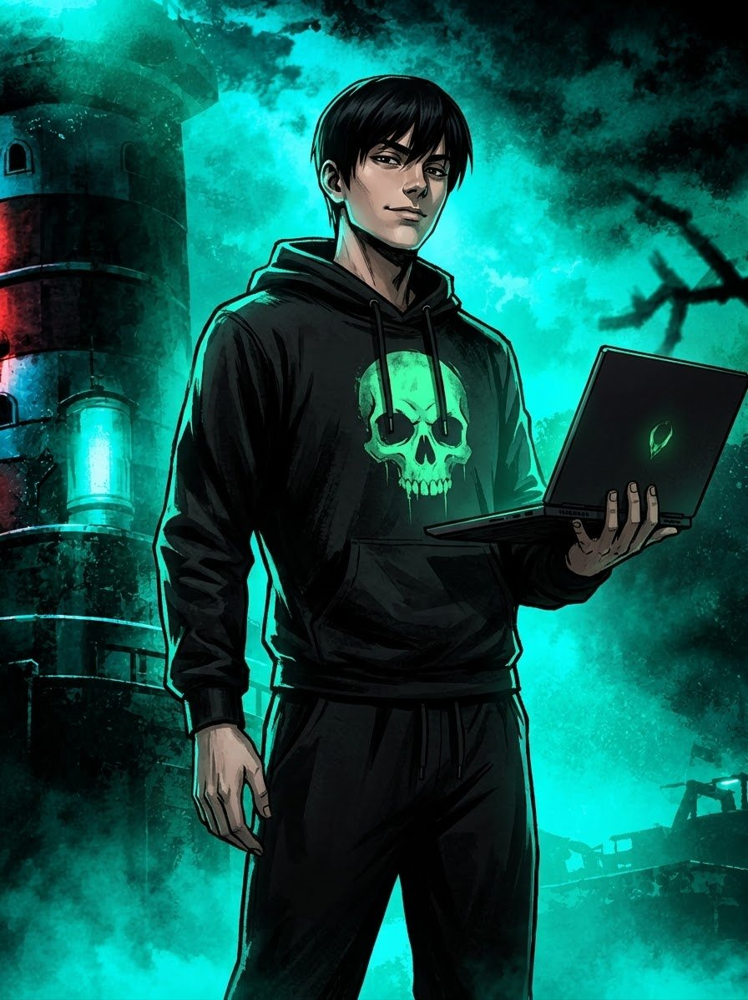
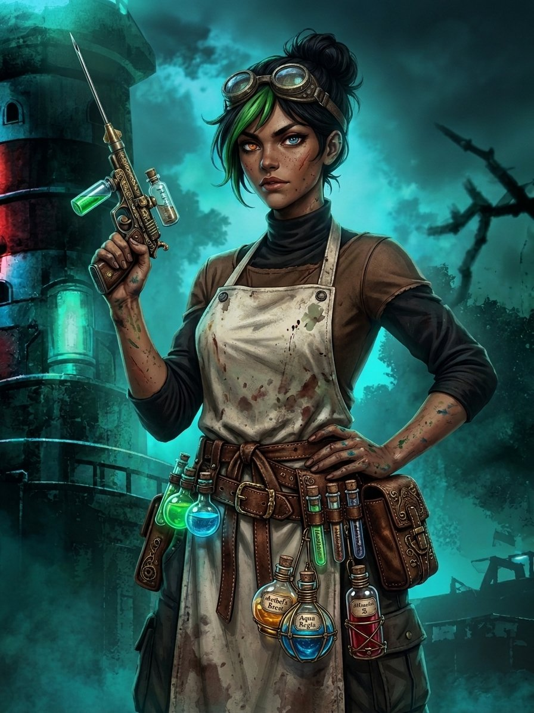
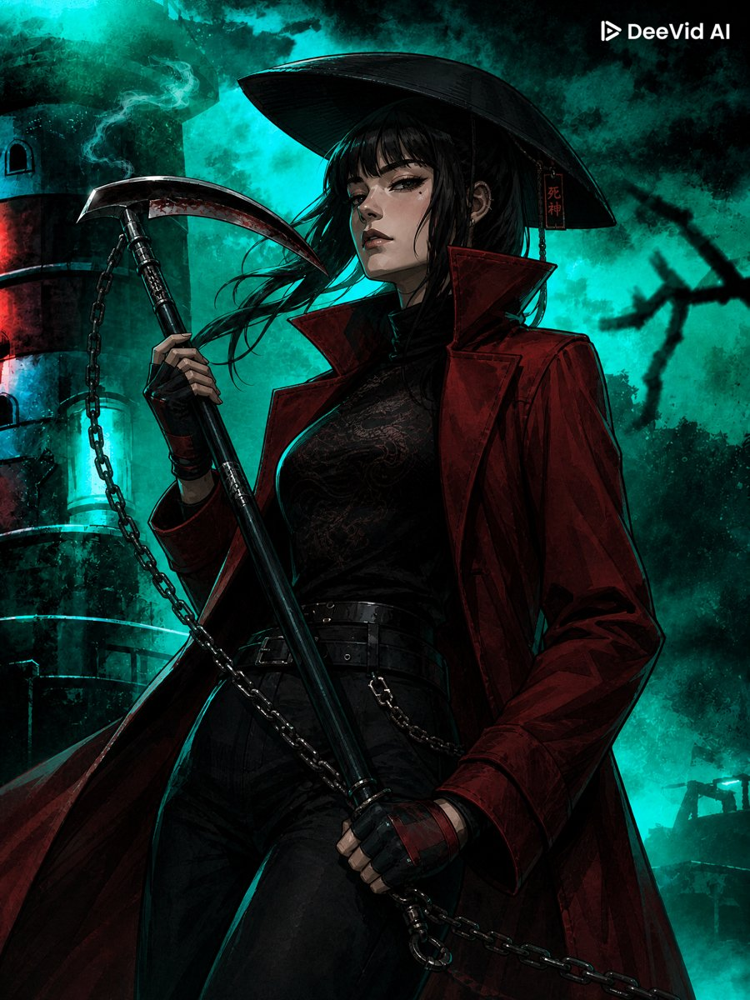
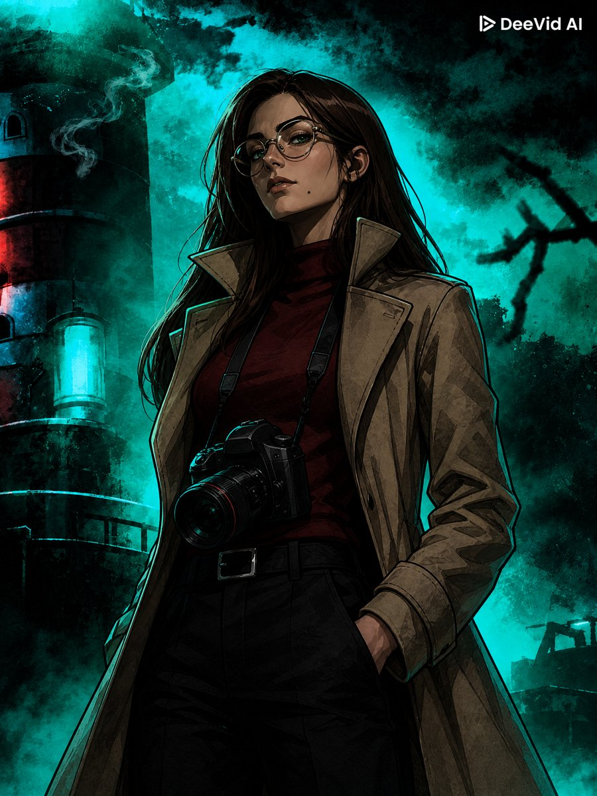
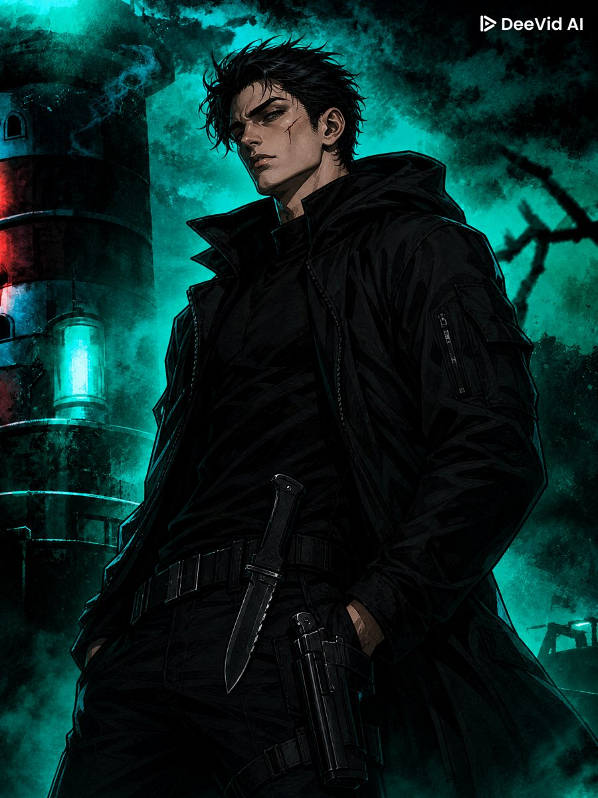
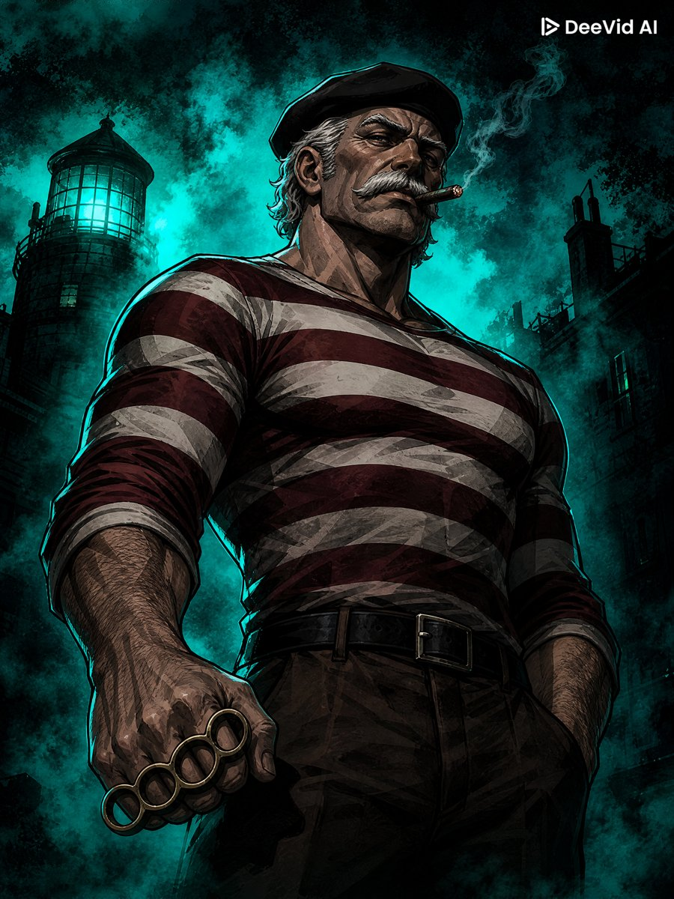
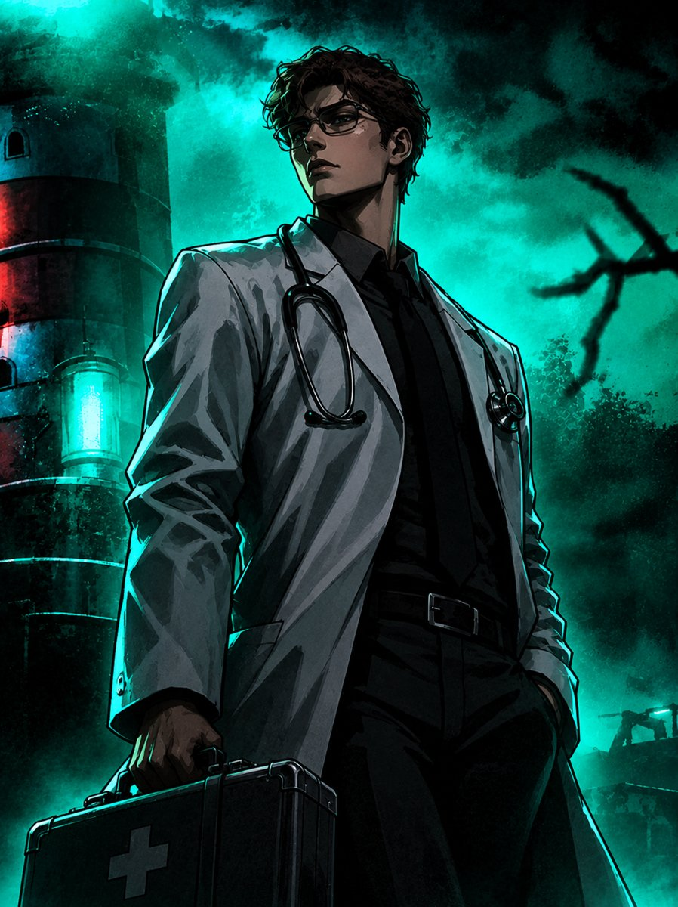
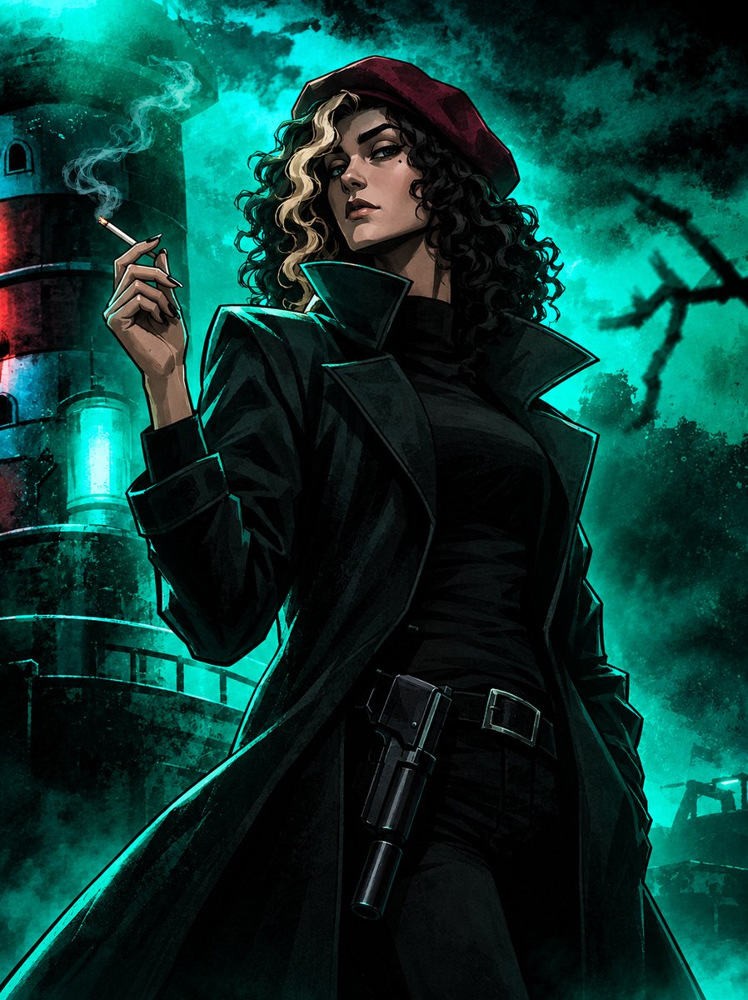

Santa Áurea
Sistema de RPG de mesa
Escolha o seu player

Hacker

Química

Especialista

Fotógrafa

Ex-militar

Veterano

Médico

Detetive
Objetivo principal
Vocês foram enviados à ilha de Santa Áurea para investigar o misterioso desaparecimento de moradores locais. A missão inicial é simples: descobrir o que aconteceu com os moradores do vilarejo, encontrar possíveis sobreviventes e identificar a causa dos desaparecimentos recentes na ilha.
Para isso, vocês deverão conversar com os moradores, investigar locais suspeitos, reunir evidências e descobrir o que está por trás dos acontecimentos.
Lembrem-se: vocês foram enviados para investigar um desaparecimento. Ainda não sabem o que realmente está acontecendo em Santa Áurea.